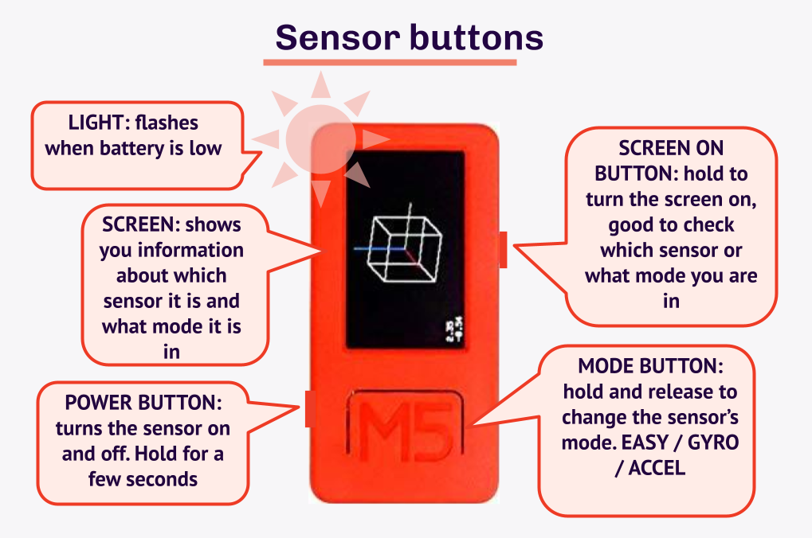

↑sidebar
Home > Instruments > Sensor Set-Up
Sensor Information
Wearable Music Sensor Information

To use web MIDI in combination to web Bluetooth, you need to enable Bluetooth on your device. GPS might be needed for security reasons. This web application is only known to be supported by Chrome. Safari and Fire Fox are not officially supported. You will need 1-3 Wearable Music Sensors [e.g. an M5 Stick] to use our instruments.